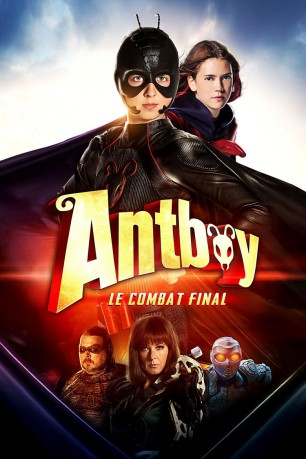

#6026 Antboy - Superhelden hoch 3
 
 IMDB-Wertung: 5.2 / 10
IMDB-Wertung: 5.2 / 10  Metascore: 0
Metascore: 0 
Pelle, der langsam erwachsen wird, genießt einen ruhigen Sommer in Middellund und soll bald sogar mit einer großen Statue geehrt werden. Doch das Superhelden-Dasein langweilt ihn mittlerweile und er beschließt, Antboy hinter sich zu lassen und nach den Ferien zusammen mit seiner Freundin Ida auf ein Internat in einer anderen Stadt zu gehen. Das passt seinem besten Freund Wilhelm gar nicht. Als Wilhelm sich vollkommen zurückzieht, ein neuer, verdächtig wirkender Superheld auftaucht und zu allem Übel auch noch der Floh aus dem Gefängnis entlassen wird, ist klar, dass das mit dem ruhigen Sommer nichts wird und sich Antboy - vielleicht zum letzten Mal - dem Bösen stellen muss ...
Jahr: 2016
Dauer: 81 Minuten
FSK: 6
Land: Dänemark Studio: MFA FilmdistributionTonspuren:
Untertitel:
Auflösung: SD (720x388) Größe: 919 MB
Genre: Komödie, Abenteuer, Familie
Regisseur: Ask Hasselbalch
Drehbuch: Kikumi Yamagishi
Soundtrack:
Darsteller:
 Nicolas Bro als Albert Gæmelkrå / The Flea
Nicolas Bro als Albert Gæmelkrå / The Flea Paprika Steen als Alicia Dufort
Paprika Steen als Alicia Dufort- Lærke Winther als Pelle's mother
 Kim Kold als Commander Combat
Kim Kold als Commander Combat- Adam Ild Rohweder als Niller
- Joon Poore als Monkey Thief
- Mads Kruse als Monkey Thief
- Steffen Holmann Olsen als TV reporter
- Oscar Dietz als Pelle / Antboy
- Amalie Kruse Jensen als Ida
- Samuel Ting Graf als Wilhelm / Sidekick
- Astrid Juncher-Benzon als Maria / Den røde furie
- Morten Rose als John Tøbbesen
- Bent Mejding als Charles Dufort
- Cecilie Alstrup Tarp als Amanda
- Daniel Christensen als Dr. Brumwinkel
- Frank Thiel als Pelle's father
- Albert Wiederspiel als Chief Doctor
- Jasmin Fu als Asian Girl
- Mike Hansen als Pimpled Teenager
- Frederik Lykkegaard als Long haired guy
- Casper Kjær Jensen als Graffiti Painter
 Adam Brix als Car Thief
Adam Brix als Car Thief- Martin Zetterlund als Monkey Thief
- Torbjørn Hummel als Commander Combat
- Bjørn Kopp als Limousine driver
- Mattis Oliver Vorwig als Boy with ice cream
- Sophus Blum als Skater boy
- Lucas Rosener als Skater boy
- Hanna Knuffmann als Girl with balloon
- Marcus Stubkjær Nielsen als School boy
- Erik Nielsen als Scientist by elevator
- Sandie Hansen Jensen als Newsreader
- Malene Hammershøy Kjerstad als Newsreader
- Thomas Mengers Karstensen als Newsreader
- Malene Kiær Hansen als TV reporter
- Mustafa Ali Mohammed als Bodybuilder
- Kenneth Robert Jensen als Bodybuilder
- Sami Krid als Bodybuilder
- Nanna Jelbert als Tae Bo Instructor
- Thorben Lundø als Interviewed Citizen
- Ingeborg Duus als Interviewed Citizen
- Kevin Lund Andersen als Interviewed Citizen
- Anton Lükten als Interviewed Citizen
Datei: X:\Kinder Collections\Antboy\Antboy - Superhelden hoch 3 (2016, FSK6, 720x388).mkv seit 24.04.2017
Festplatte: Kinder-Filme+Trick
 Alle Filme aus Gruppe 'Kinder Collections\Antboy'
Alle Filme aus Gruppe 'Kinder Collections\Antboy'